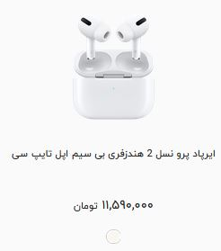
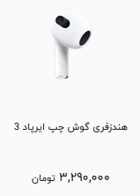
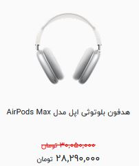

ایرپادها به عنوان شاهکار اپل و آغازگر انقلابی در صنعت هدفون های بی سیم شناخته میشوند. از اولین نسل ایرپاد که در فوریه سال 2017 رونمایی شد، تا به امروز 4 مدل مختلف ایرپاد تولید شده است که شامل ایرپاد 2، ایرپاد پرو ، ایرپاد 3 و جدید ترین نسل آن ایرپاد پرو 2 میباشد. برای اطلاع از قیمت هر محصول لطفا به دسته بندی محصول مورد نظر رجوع کنید.
هدستهای بیسیم از جمله محبوبترین گجتها هستند. کمپانی اپل یکی از بهترین و بزرگترین تولیدکنندههای هدست بیسیم در دنیا است و نام جدیدترین محصول خود را ایرپاد پرو 2 گذاشته است. ایرپاد پرو 2 دارای ویژگی های خارق العاده ای مانند صدای سهبعدی Dolby Atmos ، تکنولوژی نویز کنسلینگ و همچنین قابلیت شفاف سازی Transparency میباشد. 
هدستهای بیسیم از جمله محبوبترین گجتها هستند. کمپانی اپل با معرفی ایرپاد 3 در سال 2021، از نسخه ای به روزتر و اقتصادی تر نسبت به سری پرو خود رونمایی کرد. ایرپاد 3 در حال حاضر جزو ارزان ترین محصولات شرکت اپل میباشد و سهم عظیمی از بازار هدفون های بی سیم را به خود اختصاص داده است. 
نسل جدید و محصول فوق العاده از خانواده ایرپاد اپل، ویژگیها و قابلیتهای کاملا متفاوتی نسبت به نسخههای دیگر دارد و این باعث میشود نگاههای بیشتری به سمت آن متمرکز شود. ایرپاد مکس اولین هدفون دورگوشی اپل است که راحتی، کیفیت ساخت و صدای فوقالعادهای را در اختیار کاربر میگذارد. اگر میخواهید برای مدت زمان زیادی به محتواهای صوتی موردعلاقهتان گوش دهید و کمترین آسیب به گوشتان وارد شود، خرید این غول صوتی اپل ایده جذابی خواهد بود. 